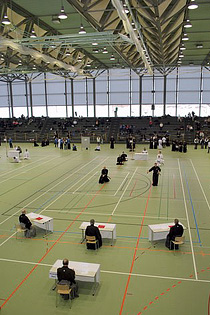
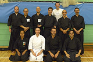
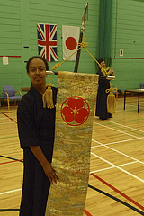
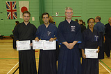
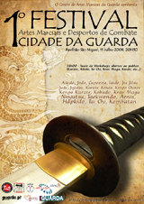
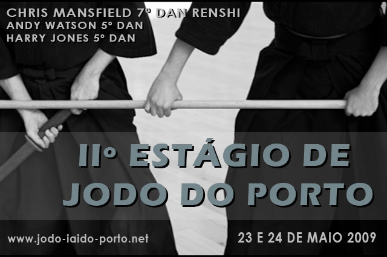
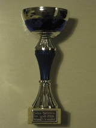
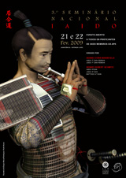

Noticias

2009.11.24
Parabéns aos mais recentes graduados do Zenshinkan
Pela ocasião dos campeonatos europeus de Iaido e Jodo, dois alunos do Zenshinkan fizeram exames de Iaido e Jodo. Os nossos parabéns vão para o João Pombo, que passou nos exames de Nidan (2 Dan) de Iaido e Shodan (1 Dan) de Jodo, e para o António Costa, que foi bem sucedido no exame de Shodan (1 Dan) de Jodo.
2009.11.24
Resultados dos Campeonatos Europeus de Iaido 2009
Nos passados dias 20 e 21 de Novembro, decorreram em Mierlo, na Holanda, os campeonatos europeus de Iaido de 2009. Portugal teve uma brilhante participação em particular no torneio por equipas onde conseguiu, pela primeira vez, passar a fase de grupos, com uma vitória sobre a Jordânia e uma derrota frente à Suiça. A nossa selecção acabaria por ser eliminada frente à Alemanha, que incluia, entre outros, o vencedor da medalha de ouro individual na categoria Yondan (4 Dan) pela segunda vez consecutiva.No torneio individual, o Bruno Belchior passou a fase de grupos na categoria Shodan, tendo sido eliminado nos oitavos de final, ao passo que a Sandra Santos, em Nidan, ficou pelo caminho na fase de grupos, se bem que tenha tido bastante azar no grupo em que calhou, tendo apanhado o vencedor incontestável do torneio no ano passado, o belga Jonathan Vandenbussche (que acabou por vencer igualmente este ano), bem como um praticante alemão e outro inglês, ambos de países que têm uma história no Iaido bem superior à nossa.
Os resultados do torneio podem ser vistos na totalidade na página ofocial do torneio.
2009.11.24
Resultados dos Campeonatos Europeus de Jodo 2009
Nos passados dias 17 e 18 de Novembro, decorreram em Mierlo, na Holanda, os campeonatos europeus de Jodo de 2009. Portugal teve uma excelente participação, tendo em conta que é apenas o segundo ano em que participa com uma selecção nacional.No torneio individual todos os praticantes nacionais passaram a fase de grupos: o Hugo Boleto (que venceu o seu grupo), e o Nuno Guedes, do Zenshinkan, na categoria Shodan e a Sandra Santos, do CJIP, na categoria Nidan. Apesar de terem sido eliminados nos oitavos de final, regista-se uma evolucao relativamente ao ano anterior, em que Portugal apenas colocou um praticante na fase de eliinaórias. No torneio por equipas Portugal acabou por nao passar da fase de grupos, no entanto tem a atenuante de ter calhado no mesmo grupo de duas das melhores selecções: a Holanda e a Alemenha. Mesmo assim registe-se a vitória da Sandra Santos, Nidan (2 Dan), contra um Yondan (4 Dan) holandês.
Os resultados do torneio podem ser vistos na totalidade na página ofocial do torneio.
2009.09.23
Selecções Nacionais para os Campeonatos Europeus

Estão definidos os elementos que irão representar o nosso país nos campeonatos europeus de Iaido e Jodo de 2009, a decorrer no início de Novembro, na localidade holandesa de Mierlo, perto de Eindhoven. O Zenshinkan - ICL congratula-se por ter alguns elementos nesta comitiva, e deseja desde já as maiores felicidades a toda a comitiva, tanto em Iaido, como em Jodo, não apenas a quem vai competir, mas também a quem vai fazer exame. A comitiva portuguesa é a que se descreve abaixo:Em Iaido:
- Categoria Sandan (3 Dan): Manuel Rodrigues (ICP)
- Categoria Nidan (2 Dan): Sandra Santos (CJIP)
- Categoria Shodan (1 Dan): Bruno Belchior (Zenshinkan - ICL) e Pedro Nunes (ICP)
- Equipa Nacional: Manuel Rodrigues, Sandra Santos, Pedro Nunes. Suplente: Bruno Belchior
- Team Manager: Sandra Santos
- Delegation Leader: Manuel Rodrigues
Em Jodo:
- Categoria Nidan (2 Dan): Sandra Santos (CJIP)
- Categoria Shodan (1 Dan): Hugo Boleto e Nuno Guedes (ambos Zenshinkan - ICL)
- Categoria Mudan (Sem Graduação Dan): João Pombo e António Costa (ambos Zenshinkan - ICL)
- Equipa Nacional: Sandra Santos, Hugo Boleto, Nuno Guedes. Suplente: João Pombo
- Team Manager e Delegation Leader: Sandra Santos
2009.08.16
Zenshinkan - ICL com 100% de Sucesso nos Exames em Brighton

Todos os alunos do Zenshinkan - Iaido Clube de Lisboa que foram propostos a exame no seminário de verão em Brighton passaram nos respcetivos exames, tanto na disciplina de Iaido como na disciplina de Jodo. Estão por isso de parabéns os seguintes membros: João Abreu (Iaido Sandan), João Maia e Pedro Gomes (ambos Iaido Sandan e Jodo Nidan), Hugo Boleto e Nuno Guedes (ambos Iaido Nidan e Jodo Shodan), José Almeida, Luis Rascão, João Pires (os três Iaido Nidan), e Bruno Romba (Iaido Shodan).Uma vez mais a comitiva portuguesa bateu o recorde de participação nestes eventos, tendo estado presentes 12 iaidokas portugueses no estágio de Iaido, e 7 jodokas no estágio de Jodo. Simultaneamente com o estágio de Jodo, decorreu um estágio de Koryu de Iaido onde estiveram também 4 iaidokas portugueses.
2009.08.16
E o prémio Fighting Spirit do torneio de koryu de Iaido vai para: Sandra Santos

A nossa colega e amiga Sandra Santos do Clube de Iaido e Jodo do Porto, foi distinguida no torneio de Koryu de Iaido comemorativo dos 30 anos da presença do Sensei Ishido na Europa, com o prestigiado prémio Fighting Spirit para a pessoa que demonstrou mais espirito de combate durante todo o torneio. Não se trata do Fighting Spirit por graduação mas sim do Fighting Spirit de entre todas as graduações, incluindo as superiores.Como prémio, a Sandra recebeu a honra de segurar o estandarte da família Ishido, que o Sensei Morita ofereceu ao Sensei Ishido por ocasião dos 30 anos de ensino na Europa. Este estandarte ficará a cargo da British Kendo Association, e os nomes dos vencedores deste prémio serão registados numa bandeira que acompanhará o estandarte em edições futuras do torneio. Por tudo isto e por ter trazido tamanho prestigio para o Iaido em Portugal, o Zenshinkan envia um enorme abraço de parabéns para a Sandra.
2009.08.16
Brilharete colectivo no taikai de Jodo comemorativo dos 30 anos de ensino na Europa do Ishido Sensei

À semelhança do que aconteceu com o Iaido, também decorreu um taikai de Jodo para comemorar os 30 anos de presença do Ishido Sensei na Europa. E se os resultados portugueses em Iaido foram brilhantes, muito por culpa da excelente prestação da Sandra Santos, em Jodo não ficaram atrás.Sandra Santos, do Clube de Jodo e Iaido do Porto, conseguiu o terceiro lugar na categoria de Nidan (2 Dan). João Maia, do Zenshinkan, conseguiu o segundo lugar e o prémio Fighting Spirit na categoria de Shodan (1 Dan) e Hugo Boleto venceu o torneio de Mudan (sem grau Dan), conseguindo assim o primeiro lugar pela primeira vez para Portugal num evento com participantes internacionais. A todos, tanto aos praticantes premiados como aos respectivos parceiros, os nossos parabéns.
2009.06.28
Participação no 1 Festival de Artes Marciais e Desportos de Combate da Cidade da Guarda

O Zenshinkan - Iaido Clube de Lisboa, aceitou recentemente o convite endereçado pela organização do 1o Festival de Artes Marciais e Desportos de Combate da Cidade da Guarda, para participar no festival. Este festival irá decorrer no sábado, dia 11 de Julho, e terá, para além de demonstrações de várias artes marciais a partir das 20:30, workshops durante a tarde para quem pretender experimentar.O Zenshinkan - Iaido clube de Lisboa irá promover workshops de Iaido e Jodo durante a tarde, e efectuará demonstrações destas duas artes a partir das 20:30. De notar que esta será uma das primeiras demonstrações de Jodo no nosso país.
Para mais informação ver o site do evento.
2009.04.15
Abertas as Inscrições para o Estágio de Verão
Encontram-se abertas as inscrições para o Estágio de Verão do Sensei Ishido, que este ano decorrerá em Inglaterra, em Brighton. Este promete ser um evento único pois assinalará os 30 anos desde que o Sensei Ishido se desloca à Europa. Como vem sendo hábito, o Sensei Ishido será acompanhado por uma comitiva de professores japoneses para os estágios de Iaido, Iaido Koryu e Jodo. Existirão também vários eventos comemorativos entre os quais um taikai de Iaido Koryu e um taikai de Jodo, nos quais participarão vários alunos do Zenshinkan - ICL.Para mais informação ver o site da BKA.
2009.04.15
Abertas as Inscrições para o Estágio de Jodo no Porto

Encontram-se abertas as inscrições para o Estágio de Jodo do Porto, organizado pelo Clube de Iaido e Jodo do Porto, cuja responsável é a nossa amiga Sandra Santos. À semelhança do que ocorreu o ano passado, este está decorre durante um fim de semana (23 e 24 de Maio), mas este ano temos a honra e o prazer de contar com o Sensei Chris Mansfield (7 Dan Renshi), e com dois dos seus melhores alunos, os Senseis Andy Watson (5 Dan) e Harry Jones (5 Dan).Para mais informação ver o site do CJIP.
2009.04.11
Gonçalo Lopes duplamente de parabéns
Um dos membros mais antigos do Zenshinkan - ICL, Gonçalo Lopes, está duplamente de parabéns. Primeiro porque se casou, segundo porque aproveitou a viagem de lua de mel para ir ao Japão, onde fez com sucesso exame para Nidan (2 Dan), em Nagasaki. Esta cidade pode ser considerada "talismã" para o Gonçalo, uma vez que tinha sido lá que tinha feito exame para Shodan (1 Dan). De todo o Zenshinkan - ICL, parabéns por mais estes sucessos.2009.03.30
Terceiro Lugar na Copa Catalana de Iaido

O aluno do Zenshinkan - ICL Ricardo Cristino conquistou o terceiro posto na Copa Catalana de Iaido 2009, que decorreu no passado fim de semana, na cidade de Caldes d'Estrac, perto de Barcelona. O Ricardo, que está de momento em Toulouse por motivos profissionais, mas nao abandonou a prática de Iaido e Jodo, estando a treinar com o Sensei Robert Rodriguez, ficou no terceiro posto da categoria A, correspondente ao nível Kyu. Parabéns de todos os membros do Zenshinkan !2009.03.30
Resultados do I Taikai de 2009 de Iaido
Decorreu na Escola Secundária Patricio Prazeres, em Lisboa, o I Taikai de Iaido de 2009. Os resultados foram os seguintes:Categoria Mudan:
1. Nuno Martins (ICP)
2. António Pinheiro (CJIP)
3. David Correia (ICP) e Jorge Viegas (Zenshinkan - ICL)
Categoria Shodan:
1. Pedro Nunes (ICP)
2. Bruno Belchior (Zenshinkan - ICL)
3. João Pombo e José Almeida (ambos Zenshikan - ICL)
Categoria Nidan:
1. João Maia (Zenshinkan - ICL)
2. Sandra Santos (CJIP)
3. Pedro Gomes (Zenshinkan - ICL)
2009.01.16
I Estágio de Iaido 2009

É no fim de semana de 21 e 22 de Fevereiro que irá decorrer mais um estágio de Iaido, com os nossos conhecidos Sensei Chris Mansfield (Iaido 7o Dan Renshi, Jodo 7o Dan Renshi) e Sensei Hubert Schmitz (Iaido 5o Dan, Jodo 5o Dan, Battodo 2o Dan). O objectivo é, uma vez mais, divulgar e promover esta disciplina do Budo em Portugal. Este estágio tem o apoio da APK - Associação Portuguesa de Kendo, e irá decorrer no Ginásio Jesus Correia, em Oeiras.Este estágio é aberto aos praticantes de iaido, e associados da APK. As inscrições encontram-se abertas, e podem ser feitas preenchendo a ficha de inscrição e enviando-a para jmaia@yahoo.com, ou alternativamente entregando a ficha preenchida durante os treinos de sábado, até ao dia do estágio, inclusive. O custo da inscrição é de 50 Eur. Mais informação aqui.
2009.01.01
Calendário de Eventos APK para 2009
A APK - Associação Portuguesa de Kendo, publicou o seu calendário oficial para 2009, que é o seguinte:| 10.01.2009 | Estágio de Kendo de Coimbra | Coimbra |
| 7-8.02.2009 | Estágio Arbitragem EKF | Bruxelas, Bélgica |
| 21-22.02.2009 | I Estágio de Iaido 2009 | Lisboa |
| 14-15.03.2009 | V Estágio Internacional de Kendo Ariga Seminar | Lisboa |
| 21.03.2009 | I Torneio de Iaido 2009 | Lisboa |
| 05.04.2009 | Estágio de Kendo de Lisboa | Lisboa |
| 23-24.05.2009 | I Estágio de Jodo 2009 | Porto |
| 31.05.2009 | Torneio de Kendo de Coimbra | Coimbra |
| 21.06.2009 | Estágio de Kendo do Porto | Porto |
| 28-30.08.2009 | Campeonato do Mundo de Kendo | São Paulo, Brasil |
| 03-05.10.2009 | II Estágio de Iaido 2009 | Lisboa |
| 10.10.2009 | Torneio de Kendo de Lisboa | Lisboa |
| 17.10.2009 | II Torneio de Iaido 2009 | Lisboa |
| 21.11.2009 | Torneio dos 10 de Kendo 2009 | Lisboa |
2009.01.01
Eventos Internacionais de Iaido e Jodo previstos para 2009
Para o ano de 2009 estão previstos os seguintes eventos:| 11.01.2009 | Ishido Cup (Iaido e Jodo) | Delft, Holanda |
| 17-18.01.2009 | Seminário de Jodo, com Sensei Louis Vitalis | Munique, Alemanha |
| 27.02-01.03.2009 | Masamune Goodwill Taikai e Seminário, com Sensei Oshita | Inglaterra |
| 07-08.03.2009 | Seminário e Exames de Iaido | Inglaterra |
| 22-22.03.2009 | Seminário de Jodo, com Senseis Louis Vitalis e Jolanda Dekker | Bari, Itália |
| 17-19.04.2009 | Seminário de Iaido e Jodo, com Senseis Jock Hopson e Rene van Amersfoort | Magglingen, Suiça |
| 21-24.05.2009 | Seminário de Iaido, com Sensei Rene van Amersfoort | Braunschweig, Alemanha |
| 04-07.06.2009 | Seminário de Iaido e Jodo, com Senseis Jock Hopson e Rene van Amersfoort | Villingen, Alemanha |
| 02-05.07.2009 | Seminário de Iaido, com Sensei Ishido | Gotemburgo, Suécia |
| 09-14.08.2009 | Seminário de Verão (Iaido e Jodo) com Sensei Ishido | Stevenage, Inglaterra |